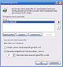
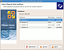

Parallelsystem
Archivierte Anleitung
Dieser Artikel wurde archiviert, da er - oder Teile daraus - nur noch unter einer älteren Ubuntu-Version nutzbar ist. Diese Anleitung wird vom Wiki-Team weder auf Richtigkeit überprüft noch anderweitig gepflegt. Zusätzlich wurde der Artikel für weitere Änderungen gesperrt.
Anmerkung: st längerem ungetestet
Artikel für fortgeschrittene Anwender
Dieser Artikel erfordert mehr Erfahrung im Umgang mit Linux und ist daher nur für fortgeschrittene Benutzer gedacht.
Zum Verständnis dieses Artikels sind folgende Seiten hilfreich:
Üblicherweise installiert man unter VMware das Gastsystem in ein sogenanntes Image. Dies ist dann ärgerlich, wenn man bereits ein voll konfiguriertes Windows installiert hat (wenn man Ubuntu und Windows im Dualboot betreibt). Man müsste nicht nur Windows und alle benötigten Programme komplett neu installieren (Zeitaufwand), sondern verschwendet zusätzlich auch noch unnötig Platz auf der Festplatte.
Mit vmware-server 1.X ist es jedoch möglich, ein bereits installiertes Windows direkt unter Ubuntu zu booten, ohne dazu den Rechner neu starten zu müssen. VMware greift dazu direkt auf die Windows-Partition zu (VMware Raw-Modus). Dies erspart viel Zeit, hat aber auch Nachteile: Ist das Windows in ein Image installiert, arbeitet man in einer Sandbox  , d.h. wird die VM von Viren oder Würmern befallen, ist der Rest des Systems nicht kompromittiert und man kann die VM auf einen älteren Snapshot zurücksetzen. Da bei der hier beschriebenen Methode das tatsächlich installierte Windows gebootet wird, ist es auch innerhalb der VM infizierbar.
, d.h. wird die VM von Viren oder Würmern befallen, ist der Rest des Systems nicht kompromittiert und man kann die VM auf einen älteren Snapshot zurücksetzen. Da bei der hier beschriebenen Methode das tatsächlich installierte Windows gebootet wird, ist es auch innerhalb der VM infizierbar.
Hinweis:
Die aktuelle Version vmware-server 2.0.0 unterstützt den direkten Zugriff auf Partitionen nicht mehr - dafür ist diese Anleitung nicht anwendbar. Beim Hersteller stehen jedoch auch ältere Versionen zum Download  bereit.
bereit.
Vorbereitung Windows¶
Hinweis:
Beim Erstellen dieser Anleitung wurde Windows XP Professional genutzt. Für andere Windows-Systeme können die notwendigen Schritte leicht abweichen. Für neuere Windows-Versionen als XP ist diese Methode nicht nutzbar.

Wenn Windows in einer VM läuft, wird ihm virtuelle Hardware vorgegaukelt. Dies führt dazu, dass Windows bei jedem Start in VMware und bei jedem regulären Start denkt, dass es in einem komplett anderen PC läuft. Um damit zusammenhängende Probleme zu vermeiden (z.B. neue Hardwareerkennung bei jedem Start), bietet Windows die Möglichkeit unterschiedliche Hardwareprofile anzulegen (auch die Aktivierung kann hier Probleme bereiten).
Dazu startet man zunächst Windows, öffnet unter "Start -> Systemsteuerung -> System" die Registerkarte "Hardware" und klickt auf den Button "Hardwareprofile". Dort erstellt man eine Kopie des aktuellen Profils (Profil 1) und gibt dieser Kopie den Namen "VMware". Bei jedem Start von Windows (ob regulär oder innerhalb der VM) werden einem nun diese beiden Profile zur Wahl angeboten. Bei einem regulären Start wählt man "Profil 1", innerhalb der VM das Profil "VMware".
Nun installiert man passend zum eigenen System entweder den VMware SCSI-Treiber, oder man aktiviert den "Standard-Zweikanal-PCI-IDE-Controller".
SCSI- oder SATA-Controller¶
Wenn man SCSI oder SATA verwendet, muss ein spezieller VMware SCSI-Treiber bei VMware heruntergeladen und installiert werden, damit Windows in der VM starten kann. Leider befindet sich der Treiber in einem merkwürdigen Image-Format, so dass man zusätzlich noch WinImage herunterladen und installieren muss, um diesen zu entpacken. Nach dem Entpacken kann man WinImage direkt wieder deinstallieren, wenn man möchte.
Den entpackten Treiber installiert man nun mit folgenden Schritten:
"Start -> Systemsteuerung -> Hardware"
im Assistenten auf "Weiter" klicken und dann wählen, dass die Hardware bereits angeschlossen wurde
in der folgenden Liste wählt man "Neue Hardware hinzufügen" und dann "Hardware manuell aus einer Liste wählen"
dort wählt man "SCSI- und Raid-Controller"
im folgenden Dialog wählt man dann "Datenträger", navigiert zum Ordner in den man den Treiber entpackt hat und installiert diesen.
IDE-Controller¶
Verwendet man IDE muss der "Standard-Zweikanal-PCI-IDE-Controller" aktiviert werden. Dies wird folgendermaßen durchgeführt.
"Start -> Systemsteuerung -> Hardware"
im Gerätemanager den IDE Conroller auswählen
"Rechtsklick -> Treiber aktualisieren"
"Nein diesmal Nicht" wählen
"Software von einer Liste oder bestimmten Quellen installieren" auswählen
"Nicht suchen, sondern den zu installierten Treiber selbst wählen"
"Standard-Zweikanal-PCI-IDE-Controller" auswählen
fertig
Nach der Installation des Treibers oder Aktivierung des "Standard-Zweikanal-PCI-IDE-Controller" kann man wieder Ubuntu booten.
Vorbereitung Ubuntu¶
Da in der hier vorgestellten Methode die VM direkt auf die Festplatte zugreift, muss man seinen Benutzer zur Gruppe "disk" hinzufügen. [3] Nun kann man das Paket vmware-server, wie im Hauptartikel beschrieben, installieren [1] und beim Anbieter registrieren. Folgende Anleitung gilt für vmware Server 1.x.x.
Einrichtung¶
Achtung!
~+Ein kritischer Hinweis vorweg: Wenn die VM eingerichtet ist und man sie startet, erhält man zunächst seinen regulären GRUB-Bootloader. Dort darf man unter keinen Umständen Ubuntu starten. Dies führt sonst unweigerlich zur totalen Zerstörung der Ubuntu-Installation!+~ Weiter unten im Abschnitt GRUB entfernen wird gezeigt, wie man den Bootloader beim Starten der VM nicht mehr angezeigt bekommt. Damit wäre diese Gefahr dann gebannt.
Erstellen der VM¶
Jetzt kann über "Anwendungen -> Systemwerkzeuge" die "VMware Server Console" gestartet werden. Man verbindet mit "Local host" und wählt dann "Create a new virtual machine". In dem dann erscheinenden Wizard wählt man als Einrichtungsmethode "Custom" und dann die angepeilte Windowsversion. Danach klickt man immer nur auf "Weiter" und lässt alle Optionen auf den voreingestellten Werten, bis man bei der Netzwerkkonfiguration landet. Dort wählt man "NAT" aus.

Im Disk-Dialog wählt man nun "Use physical disk" und danach "Use individual partitions". Dort wählt man seine Windows-Partition und die Ubuntu Root-Partition (da dort der Bootloader installiert ist, siehe Screenshot). Im nächsten Bildschirm braucht man dann nur noch auf "Finish" drücken und fertig ist die Virtual Machine. Falls man noch etwas an der Konfiguration der VM ändern möchte kann man nun "Edit virtual machine settings" wählen. Dort kann man bspw. weitere (virtuelle) Hardware, wie einen USB-Controller hinzufügen, damit man innerhalb der VM auf USB-Sticks zugreifen kann.
Der erste Start¶
Hinweis:
Es ist möglich die Windows-Partition in Ubuntu eingehängt zu lassen, wärend die VM darauf zugreift. Es sollten jedoch keine Schreibzugriffe aus Ubuntu heraus erfolgen. Dies führt dazu, dass die entsprechenden Dateien später nicht mehr lesbar sind und von Windows' chkdsk entfernt werden.
Beim Booten in GRUB unbedingt Windows wählen (siehe Warnung oben). Danach erhält man nun den neuen Dialog zur Auswahl des Hardwareprofils, wo natürlich "VMware" gewählt werden muss. Nach dem Start wird reichlich neue Hardware erkannt. Die entsprechenden Meldungen ignoriert man zunächst alle ("Abbrechen"). Um die Performance und Grafik zu verbessern, sollte man als erstes die "VMware Tools" installieren ("VM -> Install VMware Tools") und danach Windows in der VM neu starten.
Zum Schluss kann man noch die Auflösung anpassen, am Besten auf die gleiche Auflösung, die man normalerweise unter Windows und Ubuntu nutzt.
GRUB entfernen¶
Wie eingangs erwähnt, bekommt man beim Start den Linux-Bootloader GRUB angezeigt. Da VMware allerdings eine Kopie des MBR anlegt, handelt es sich hier nicht um den GRUB, der auf der Festplatte liegt, sondern um eine Kopie desselben. D.h. man kann den GRUB in der VM gefahrlos entfernen. Das ist zwar etwas umständlich, lohnt sich aber allemal, da ein versehentliches Booten von Ubuntu zu schwerwiegenden Problemen führen kann.
Zum Entfernen des GRUB benötigt man folgendes:
eine Windows XP-CD
den oben genannten SCSI-Treiber (das .flp Floppy-Image)
das Kennwort des Nutzers administrator (falls man dieses vergessen hat, in der Windows-Userverwaltung ein neues setzen, oder wenn man mit Administrator-Rechten angemeldet ist, durch den Befehl net user administrator neueskennwort)
Zunächst startet man die "VMWare Server Console" und klickt bei der VM auf "Edit virtual machine settings". Beim Floppy-Laufwerk stellt man "Connect at power on" ein und wählt als Image die .flp-Datei mit den SCSI-Treibern aus (das ist notwendig, damit die VMware-SCSI-Treiber beim Starten der Windows-CD geladen werden). Beim CD-ROM macht man das Gleiche, wählt aber entweder ein Windows-CD-Image aus, oder gibt das Gerät an, in welches man die CD eingelegt hat.
Nun startet man die VM und drückt direkt beim Start
Esc , so dass man in das Bootmenü gelangt. Dort wählt man "CDROM" aus und startet die Windows-CD. Jetzt drückt man
R , um in die Rettungskonsole zu gelangen und gibt das Administrator-Kennwort ein. (Bei Kennwort-Problemen helfen eventuell diese Microsoft-Artikel weiter: Fehlermeldung "Kennwort ist ungültig" beim Versuch der Anmeldung bei Wiederherstellungskonsole in Windows XP, Aktivieren der automatischen Administratoranmeldung in der Wiederherstellungskonsole ) Mit dem Befehl fixmbr kann man nun den Master Boot Record neu schreiben.
An dieser Stelle kann die VM direkt wieder ausgeschaltet werden. Man sollte noch die Einstellungen für das Floppy-Laufwerk rückgängig machen, da die VM sonst nicht mehr bootet. Fertig.
Probleme¶
Aktivierung¶
Durch den ständigen "Hardwarewechsel" kann es passieren, dass Windows immer wieder neu aktiviert werden muss. Möglichkeiten dieses Problem zu umgehen sind:
Die Nutzung einer Corporate Edition
Die Entfernung der Aktivierung aus Windows
Es soll auch helfen, eine kleine Änderung an der VM selbst vorzunehmen. Dazu öffnet man mit Root-Rechten [2] die zur VM gehörende .vmx-Datei im entsprechenden Unterverzeichnis von /var/lib/vmware-server/Virtual Machines/ und fügt am Ende folgende Zeile an:
SMBIOS.reflectHost = "TRUE"
Bluescreen¶
Falls Windows nicht in der VM bootet und bspw. mit einem Bluescreen abstürzt kann es daran liegen, dass die Windows Partition unter Linux gemountet ist. Diese sollte man dann testweise aushängen und es nochmal probieren. Installiert man irrtümlich zu einem IDE System den SCSI Treiber, dann führt das auch zu einem Bluescreen.
Es kann auch helfen Windows regulär mit dem VMware-Profil zu booten und dann im Gerätemanager bestimmte Hardware (wie z.B. die Grafikkarte, Soundkarte, WDM, usw.) zu deaktivieren.
- Erstellt mit Inyoka
-
 2004 – 2017 ubuntuusers.de • Einige Rechte vorbehalten
2004 – 2017 ubuntuusers.de • Einige Rechte vorbehalten
Lizenz • Kontakt • Datenschutz • Impressum • Serverstatus -
Serverhousing gespendet von